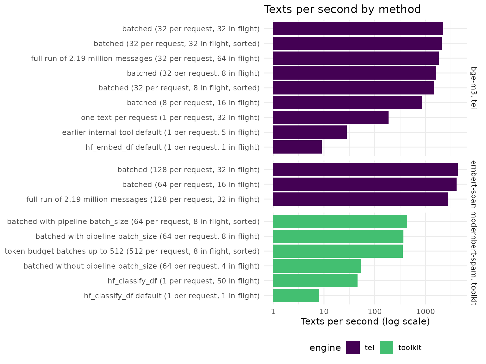
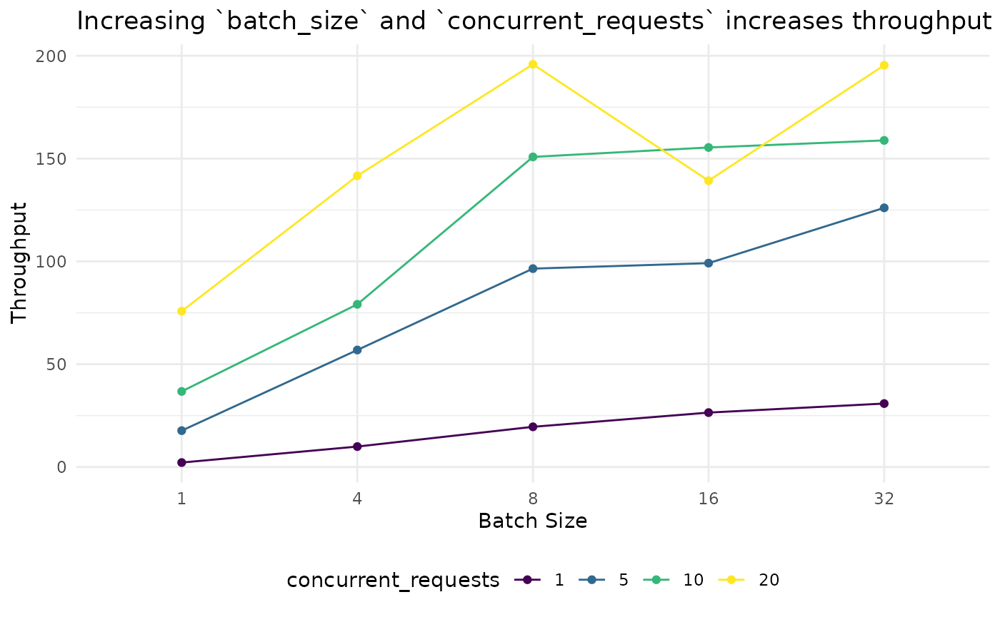

In this vignette we’ll look at strategies for improving the throughput and performance of EndpointR’s functions. Our goal will be to move from sending single requests to sending multiple batches simultaneously.
Before we get into how, let’s go a bit further into why.
Understanding the Time Problem
For each row of our data frame, we need to create a request which we will then perform. We perform the request by sending our information over the internet to the endpoint. The endpoint accepts our request, performs any computation, and sends a successful response or an error. Each step has an associated cost in time, and the cost for each step is not equal - some steps are more costly than others.
Creating each request is almost instant, but if we have a larger data frame - e.g. with 100,000 rows: creating 100,000 requests simultaneously will take 30s-90s. If we create them all at once, we’ll have to wait the full amount of time before we begin sending requests. Clearly this is wasteful - if we had created the first request and sent it, we would save at least 90 seconds.
Sending each request to the endpoint and waiting for it to process will usually take a lot longer than preparing the request. Therefore, if we can find ways to reduce the time we spend waiting here, we should be able to reduce the overall time it takes to prepare and send our requests significantly.
This vignette will focus mainly on the
hf_embed_df()function and the options we have for improving throughput of requests. The same ideas apply to thehf_classify_df()function, and some ideas transfer to other providers and their functions, e.g.oai_*().
Set Up
TODO: Copied from hugging_face_inference.Rmd, need to re-order and edit
We’ll need some data, so we’ll grab the same sentences and data frame from the introductory vignette on Hugging Face Inference:
embedding_sentences <- c(
"Text embedding models compress your rambling prose into compact vectors, much like how British commuters squeeze themselves into tube carriages during rush hour.",
"Setting up an inference endpoint without proper documentation is akin to attempting to navigate London using a map of Birmingham.",
"When your embedding model starts hallucinating, it's rather like watching Parliament during Question Time—entertaining but utterly unpredictable.",
"Optimising your inference endpoint is essential unless you fancy your users growing old whilst waiting for a response, perhaps even ageing enough to collect their pension.",
"The distance between word embeddings reveals semantic relationships, though sadly not the distance between what your client requested and what they actually wanted.",
"Creating multilingual embeddings is a bit like attempting to order tea properly across Europe—technically possible but fraught with cultural misunderstandings.",
"Batch processing through inference endpoints saves computing resources, much like how the British save conversation topics by discussing the weather exclusively.",
"Token limits on embedding APIs are the digital equivalent of a queue at a British post office—inevitably, you'll reach the front just as they close for lunch.",
"Fine-tuning embedding models on domain-specific corpora is rather like training a British child to apologise—it requires repetition, patience, and considerable examples.",
"When your inference endpoint crashes under load, it maintains that quintessentially British trait of breaking down precisely when most inconvenient."
)
embedding_ids <- 1:10
embedding_df <-
tibble(
id = embedding_ids,
sentence = embedding_sentences
)WARNING: To follow along you will need to provide your own endpoint_url and set your own API key. I am using an encrypted URL for security purposes.
ENDPOINTR_KEYis a person-specific (i.e. you should not have access to my key) environment variable which can be used to encrypt any information, and should be stored securely offline, and not committed to GitHub or other online services.
endpoint_url <- httr2::secret_decrypt("kcZCsc92Ty7PuAk7_FdCcdOU_dlDpvWdDyfpwCWg-wW80eJxJPdQ68nz4V_0922SzSwM5_dYfpTOqsZ-GodUpLN4PQbwE73wlZkBCWIaIXc15g", "ENDPOINTR_KEY")Improving Performance - Time
For the hf_embed_df() function, our main options are to
increase the number of requests we send at the same time, and the number
of texts we send within each request.
-
concurrent_requestssets how many requests EndpointR keeps in flight at the same time. The default is 16. In our tests, the default Hugging Face Inference Toolkit gained nothing above about 8 requests, and Text Embeddings Inference (TEI) gained up to about 32. -
batch_sizesets how many texts EndpointR sends in each request. The default is 32, which is TEI’s defaultmax_client_batch_size, so it works on every TEI endpoint.
NOTE: Before 0.3.0,
hf_embed_df()andhf_classify_df()sent one text per request and one request at a time by default. Those defaults were the main cause of slow runs.
Solution 1: Concurrent Requests
Hugging Face Inference Endpoints can handle many requests at the same time. The goal is to send just under the number of requests the endpoint can handle. For example, an endpoint with a powerful GPU may be able to handle hundreds of documents at a time, whereas an endpoint with a small CPU will be able to handle only a handful.
The best number depends on the engine. TEI combines texts from all waiting requests into one batch on the GPU, so more requests in flight keep the GPU busy. On BGE M3, going from 8 to 32 requests in flight raised throughput by 37%. The toolkit runs one request at a time on the GPU, so more than about 8 requests in flight only make requests wait longer.
TIP: Endpoints can be configured to ‘autoscale’, which means they add hardware when the number of queued requests is above a threshold for a set time.
Here we keep 16 requests in flight, each with one text. EndpointR sends a new request each time a response comes back, until it runs out of data.
hf_embed_df(
df = embedding_df,
text_var = sentence,
endpoint_url = endpoint_url,
key_name = "HF_TEST_API_KEY",
id_var = id,
concurrent_requests = 16,
batch_size = 1,
progress = TRUE
)Solution 2: Batching Requests
Another way to reduce processing time is to send more texts in each request. We then send fewer requests overall, and spend less time sending information over the network.
If we have 1,000 rows of data, batch_size = 32 results
in 32 requests, instead of the 1,000 we would send with
batch_size = 1.
On the toolkit, batching only helps the GPU when the request sets
parameters$batch_size. Without it, the toolkit pipeline
runs the texts in a request one at a time. EndpointR sets
parameters$batch_size to the number of texts in each
request. In our tests on the spam classifier, 64 texts per request
without parameters$batch_size gave 54 texts per second, and
with it gave 367 texts per second.
The toolkit pads each batch to the length of its longest text, so a batch with one long text wastes work on all the short ones. EndpointR sorts texts by length before it makes batches on the toolkit, which made our runs about 20% faster. TEI does not pad, so EndpointR does not sort texts for TEI.
hf_embed_df(
df = embedding_df_1000,
text_var = sentence,
endpoint_url = endpoint_url,
key_name = "HF_TEST_API_KEY",
id_var = id,
concurrent_requests = 1,
batch_size = 32,
progress = TRUE
)Solution 3: Combining Concurrency and Batching
For the most speed, send batches of texts with many requests in
flight. These are the defaults, batch_size = 32 and
concurrent_requests = 16:
hf_embed_df(
df = embedding_df_1000,
text_var = sentence,
endpoint_url = endpoint_url,
key_name = "HF_TEST_API_KEY",
id_var = id,
batch_size = 32,
concurrent_requests = 16
)Benchmarking Solutions
On 1 October 2026, we measured throughput on two of our Hugging Face Dedicated Inference Endpoints, both on A100 GPUs:
- A ModernBERT base spam classifier, on the default toolkit and then on TEI 1.8.2
- BGE M3, an embedding model, on TEI 1.8.2
All tests ran from one laptop in the UK against endpoints in AWS us-east-1. Texts per second is the end-to-end rate seen by the client. The test texts averaged about 60 tokens each.
| model | engine | hardware | method | texts_per_request | concurrent_requests | sorted | n_texts | texts_per_sec |
|---|---|---|---|---|---|---|---|---|
| modernbert-spam | toolkit | A100 | hf_classify_df default | 1 | 1 | FALSE | 300 | 8.1 |
| modernbert-spam | toolkit | A100 | hf_classify_df | 1 | 50 | FALSE | 1000 | 45.6 |
| modernbert-spam | toolkit | A100 | batched without pipeline batch_size | 64 | 4 | FALSE | 1000 | 53.6 |
| modernbert-spam | toolkit | A100 | batched with pipeline batch_size | 64 | 8 | FALSE | 100000 | 367.0 |
| modernbert-spam | toolkit | A100 | batched with pipeline batch_size | 64 | 8 | TRUE | 100000 | 436.0 |
| modernbert-spam | toolkit | A100 | token budget batches up to 512 | 512 | 8 | TRUE | 100000 | 354.0 |
| modernbert-spam | tei | A100 | batched | 128 | 32 | FALSE | 100000 | 4305.0 |
| modernbert-spam | tei | A100 | batched | 64 | 16 | FALSE | 100000 | 4094.0 |
| bge-m3 | tei | A100 | hf_embed_df default | 1 | 1 | FALSE | 500 | 9.0 |
| bge-m3 | tei | A100 | earlier internal tool default | 1 | 5 | FALSE | 1000 | 28.0 |
| bge-m3 | tei | A100 | one text per request | 1 | 32 | FALSE | 20000 | 187.0 |
| bge-m3 | tei | A100 | batched | 8 | 16 | FALSE | 20000 | 856.0 |
| bge-m3 | tei | A100 | batched | 32 | 8 | FALSE | 20000 | 1596.0 |
| bge-m3 | tei | A100 | batched | 32 | 8 | TRUE | 20000 | 1474.0 |
| bge-m3 | tei | A100 | batched | 32 | 32 | TRUE | 50000 | 2083.0 |
| bge-m3 | tei | A100 | batched | 32 | 32 | FALSE | 20000 | 2245.0 |
| modernbert-spam | tei | A100 | full run of 2.19 million messages | 128 | 32 | FALSE | 2189478 | 2799.0 |
| bge-m3 | tei | A100 | full run of 2.19 million messages | 32 | 64 | FALSE | 2189478 | 1819.0 |
hf_throughput_benchmark |>
mutate(
setting = paste0(method, " (", texts_per_request, " per request, ",
concurrent_requests, " in flight",
if_else(sorted, ", sorted", ""), ")"),
model_engine = paste(model, engine, sep = ", ")
) |>
ggplot(aes(x = texts_per_sec, y = reorder(setting, texts_per_sec), fill = engine)) +
geom_col() +
facet_grid(model_engine ~ ., scales = "free_y", space = "free_y") +
scale_x_log10() +
scale_fill_viridis_d(end = 0.7) +
labs(x = "Texts per second (log scale)", y = NULL,
title = "Texts per second by method") +
theme_minimal() +
theme(legend.position = "bottom")
The x axis uses a log scale, because the slowest and fastest settings differ by more than 500 times.
The results show the following:
- The old defaults of
hf_embed_df()andhf_classify_df(), one text per request and one request at a time, gave 8 to 9 texts per second. At that rate, 100,000 texts take about 3 hours. - On TEI, 32 texts per request with 32 requests in flight embedded about 2,100 to 2,400 texts per second with BGE M3, so 100,000 texts took under a minute.
- On TEI, 128 texts per request with 32 requests in flight classified about 4,300 texts per second with the spam classifier. The same model on the toolkit, at its best setting, gave 436 texts per second.
- We ran a full job of 2,189,478 messages through both TEI endpoints. The spam classifier finished in 13 minutes and BGE M3 in 20 minutes, with no failed texts. At the old defaults, the same job would take about 76 and 68 hours.
What happens when batch_size and concurrent_requests keep rising?
The 2025 benchmark below asked whether throughput keeps rising as
batch_size and concurrent_requests rise. Our
2026 tests show that it does not, and that the limits depend on the
engine.
On TEI, each endpoint rejects requests with more texts than its
max_client_batch_size, which is 32 by default. You can
raise the limit when you deploy the endpoint, e.g. our spam endpoint
allows 128. EndpointR lowers batch_size to the limit with a
warning. More requests in flight helped up to about 32. Our full BGE M3
run used 64 requests in flight and was not faster than the shorter tests
with 32.
On the toolkit, more requests in flight gave no gain above about 8. Larger batches helped up to 64 texts per request. Batches that grew to fit a token budget, with up to 512 texts per request, were 19% slower than fixed batches of 64. We suggest at most 64 texts per request and 8 requests in flight on the toolkit.
2025 benchmark
In an earlier session, with a dataset that is not in the package and a smaller endpoint, we looked at combinations of:
- batch_size = c(1, 4, 8, 16, 32)
- concurrent_requests = c(1, 5, 10, 15, 20)
data(batch_concurrent_benchmark, package = "EndpointR")
knitr::kable(batch_concurrent_benchmark |> mutate_if(is.numeric, ~ round(.x, 2)))| batch_size | concurrent_requests | chunk_index | elapsed_time | success | rows_processed | throughput |
|---|---|---|---|---|---|---|
| 1 | 1 | 2 | 921.77 | TRUE | 1995 | 2.16 |
| 1 | 5 | 3 | 112.84 | TRUE | 1996 | 17.69 |
| 1 | 10 | 4 | 54.37 | TRUE | 1998 | 36.75 |
| 1 | 20 | 5 | 26.38 | TRUE | 1999 | 75.77 |
| 4 | 1 | 6 | 200.85 | TRUE | 1996 | 9.94 |
| 4 | 5 | 7 | 35.10 | TRUE | 1997 | 56.90 |
| 4 | 10 | 8 | 25.28 | TRUE | 2000 | 79.12 |
| 4 | 20 | 9 | 14.11 | TRUE | 1999 | 141.62 |
| 8 | 1 | 10 | 102.14 | TRUE | 1996 | 19.54 |
| 8 | 5 | 11 | 20.71 | TRUE | 1998 | 96.48 |
| 8 | 10 | 12 | 13.23 | TRUE | 1995 | 150.82 |
| 8 | 20 | 13 | 10.20 | TRUE | 1998 | 195.85 |
| 16 | 1 | 14 | 75.39 | TRUE | 1995 | 26.46 |
| 16 | 5 | 15 | 20.16 | TRUE | 1999 | 99.14 |
| 16 | 10 | 16 | 12.86 | TRUE | 1999 | 155.40 |
| 16 | 20 | 17 | 14.35 | TRUE | 1998 | 139.23 |
| 32 | 1 | 18 | 64.83 | TRUE | 2000 | 30.85 |
| 32 | 5 | 19 | 15.87 | TRUE | 2000 | 126.04 |
| 32 | 10 | 20 | 12.59 | TRUE | 2000 | 158.84 |
| 32 | 20 | 1 | 10.23 | TRUE | 1998 | 195.39 |
To embed about 2,000 documents with 1 text and 1 request at a time, the throughput was about 2.16 texts per second, and the job took over 15 minutes. With 20 concurrent requests of batch size 8 or 32, the throughput was about 195 texts per second, and the job took about 10 seconds.
batch_concurrent_benchmark |>
mutate(batch_size = factor(batch_size), concurrent_requests = factor(concurrent_requests)) |>
ggplot(aes(x = batch_size, y = throughput, group = concurrent_requests)) +
geom_point(aes(colour = concurrent_requests)) +
geom_line(aes(colour = concurrent_requests)) +
labs(y = "Throughput", x = "Batch Size", title = "Increasing `batch_size` and `concurrent_requests` increases throughput") +
scale_colour_viridis_d() +
theme_minimal() +
theme(legend.position = "bottom")
Within the range of this benchmark, both settings raised throughput,
and a linear model shows that concurrent_requests had the
larger effect. The 2026 results above show where the gains stop.
model <- lm(throughput ~ batch_size + concurrent_requests, data = batch_concurrent_benchmark)
broom::tidy(model) |>
mutate(across(c(estimate, std.error, statistic), ~round(.x, 2)))
#> # A tibble: 3 × 5
#> term estimate std.error statistic p.value
#> <chr> <dbl> <dbl> <dbl> <dbl>
#> 1 (Intercept) 3.34 15.5 0.22 0.832
#> 2 batch_size 2.4 0.71 3.37 0.00366
#> 3 concurrent_requests 6.45 1.12 5.77 0.0000224Understanding the Memory Problem
TODO:
Appendix - Embeddings
TODO: out of date post-refactoring
Benchmarking Concurrent Requests
run_benchmark <- function(num_concurrent, data, endpoint, key) {
start_time <- Sys.time()
res_df <- try(hf_embed_df(
df = data,
text_var = sentence,
id_var= id,
endpoint_url = endpoint,
key_name = key,
include_errors = FALSE,
concurrent_requests = num_concurrent,
progress = FALSE
), silent = TRUE)
processing_time <- Sys.time() - start_time
success <- !inherits(res_df, "try-error") && nrow(res_df) == nrow(data)
return(data.frame(
concurrent_requests = num_concurrent,
processing_time_secs = as.numeric(processing_time, units = "secs"),
success = success
))
}
num_requests_vec <- c(5, 10, 20)
results_list <- lapply(num_requests_vec, function(n) {
run_benchmark(
num_concurrent = n,
data = embedding_df_1000,
endpoint = endpoint_url,
key = "HF_TEST_API_KEY"
)
})
(summary_df <- do.call(rbind, results_list))Benchmarking Batch and Concurrent Requests
You won’t be able to re-run this exactly as-is, as the data frame is not provided with the package. You could bring your own data if you wanted to do this.
trust <- readr::read_csv("~/data/trust/trust_slice_spam_classification.csv") |>
select(text) |>
mutate(id = row_number()) |>
filter(!is.na(text), text != "") # stop NAs and empty vals crashing anything
chunk_size <- 2000
total_chunks <- 20
# this chunking logic is actually rubbish.
trust_chunks <- trust |>
mutate(chunk_id = ceiling(id / chunk_size)) |>
group_split(chunk_id) |>
head(total_chunks)
benchmark_params <- crossing(
batch_size = c(1, 4, 8, 16, 32),
concurrent_requests = c(1, 5, 10, 20)
) |>
mutate(chunk_index = row_number() %% total_chunks + 1)
benchmark_results <- benchmark_params |>
mutate(result = pmap(list(batch_size, concurrent_requests, chunk_index), function(bs, cr, ci) {
current_chunk <- trust_chunks[[ci]]
start_time <- Sys.time()
res <- try(hf_embed_df(
df = current_chunk,
text_var = text,
id_var = id,
endpoint_url = endpoint_url,
key_name = "HF_TEST_API_KEY",
batch_size = bs,
concurrent_requests = cr,
progress = TRUE
), silent = TRUE)
elapsed_time <- as.numeric(Sys.time() - start_time, units = "secs")
success <- !inherits(res, "try-error")
rows_processed <- if(success) nrow(current_chunk) else 0
list(
elapsed_time = elapsed_time,
success = success,
rows_processed = rows_processed,
throughput = if(success) rows_processed / elapsed_time else 0
)
})) |>
nest_wider(result)